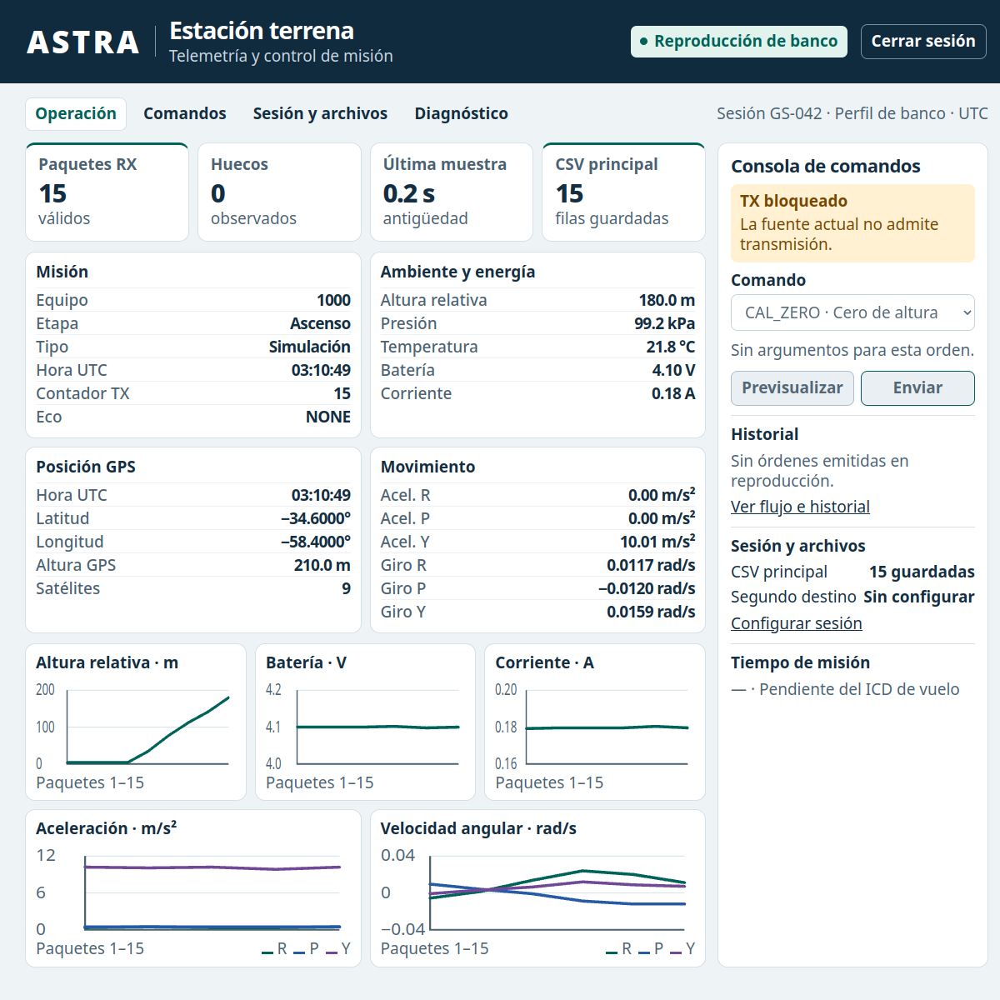
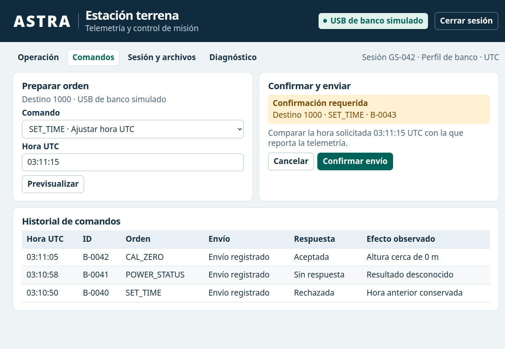
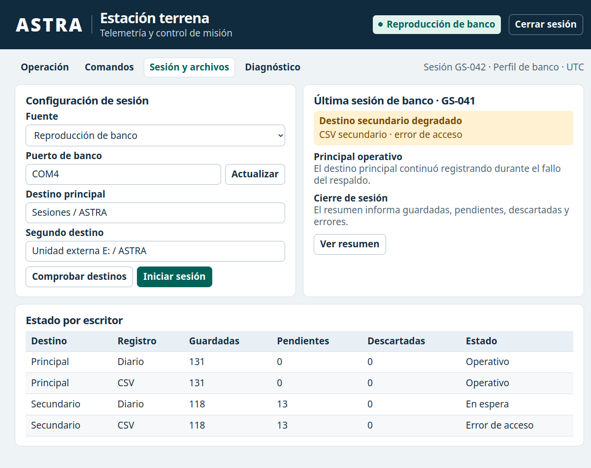
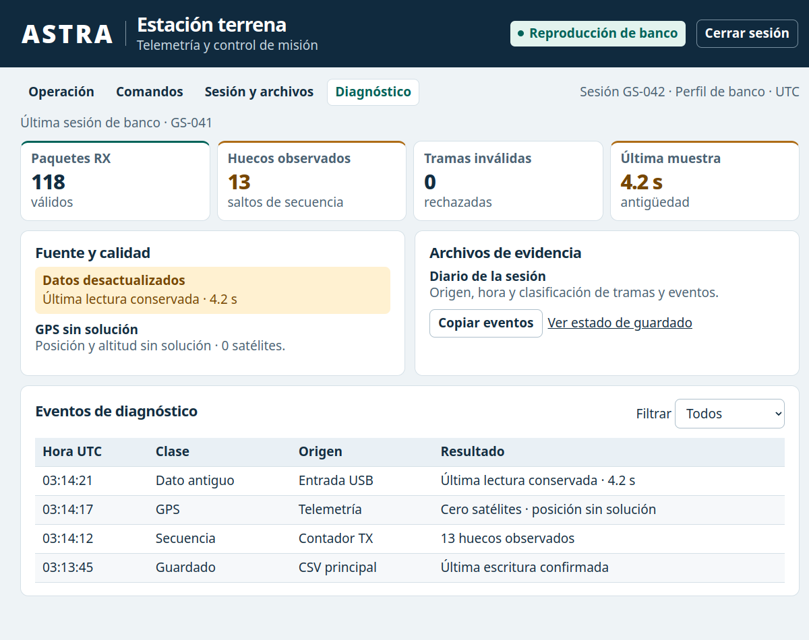

<!doctype html><html lang="es"><meta charset="utf-8"><meta name="viewport" content="width=device-width,initial-scale=1"><title>ASTRA · Capturas de la estación terrena</title><style>body{margin:0;background:#eef3f6;color:#122e42;font:18px/1.5 system-ui}header{background:#102a3e;color:white;padding:24px 4vw}header h1{margin:0}main{max-width:1260px;margin:auto;padding:20px}figure{margin:0 0 32px}figcaption{font-size:24px;font-weight:700;margin-bottom:8px}img{display:block;width:100%;height:auto;border:1px solid #d5e0e7}</style><header><h1>ASTRA · Estación terrena</h1><p>Capturas de la aplicación de banco</p></header><main><figure><figcaption>Operación</figcaption></figure><figure><figcaption>Comandos</figcaption></figure><figure><figcaption>Sesión y archivos</figcaption></figure><figure><figcaption>Diagnóstico</figcaption></figure></main></html>